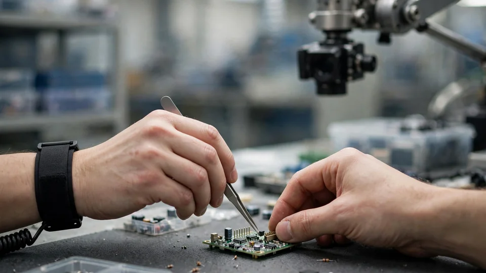
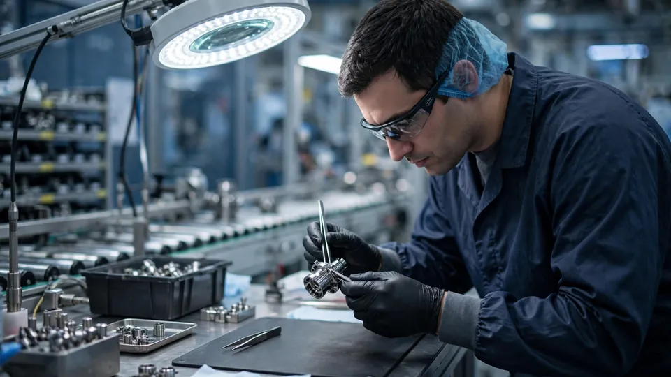

Assembler AI raises $4M seed to put computer vision over the factory workbench
- Who: Assembler AI, a Montreal computer-vision startup led by CEO Brett Beranek.
- What: a $4 million seed funding round announced October 22, 2026.
- Lead investor: Diagram ClimateTech Fund; participants include Drive Capital, Fondaction, Developer Capital, Mavrik, Sprout Fund, and Telegraph Ventures.
- Product: Operator Vision — cameras and computer vision over manual stations that flag cycle-time deviations, quality deviations, and actions putting production at risk.
- Why it matters: the company says US plants operate at just 76% of capacity; catching mistakes earlier keeps valuable materials from becoming scrap.
Assembler AI announced on Thursday that it has closed a $4 million seed funding round led by Diagram ClimateTech Fund, money it will use to roll out its computer-vision system across North American manufacturers. The Montreal startup's flagship product, Operator Vision, points cameras at manual assembly stations and flags mistakes — missed steps, wrong parts, slow cycles — as they happen.
The raise
Diagram ClimateTech Fund led the round, with Drive Capital, Fondaction, Developer Capital, Mavrik, Sprout Fund, and Telegraph Ventures participating. The company says it will use the proceeds to accelerate growth across North American manufacturers, expanding beyond a limited set of pre-launch customers and taking its computer-vision technology to market.
For Diagram, the pitch is climate as much as quality. “Recent advances in computer vision opened up a new way to tackle one of manufacturing's most persistent challenges: improving quality and efficiency in work done by hand,” said Amélie Foz-Couture, general partner and co-head of the fund. “Catching mistakes earlier can prevent valuable materials from becoming scrap. We're excited to back Brett and the team as they bring to market a solution that lowers costs, improves throughput, and delivers meaningful climate impact in a sector whose materials contribute significantly to global GHG emissions.”
What Operator Vision does
Operator Vision captures every action at a manual station. The system flags cycle-time deviations, quality deviations, and actions that put production at risk; the operator gets guidance in real time, and engineering gets visibility across every station and every shift. It is aimed at the work that never got automated: the high-value manual tasks — aircraft assemblies, medical devices, vehicle components — that the company says keep North American manufacturing competitive.

CEO Brett Beranek frames it as an efficiency play with a hard number attached: the company says it helps manufacturers “close the critical gap between plant capacity and actual output, which currently sits at 76% in the United States.” The investor thesis, per Developer Capital CEO Jordan Steiner: “This has been a need for the manufacturing industry for decades. Now, AI technology has finally caught up, and Assembler has built a system that is ready to be deployed.”
Why manual stations are the target
Vision systems for factory automation are not new — but most point at machines, not hands. Manual stations resisted instrumentation because every operator works differently, and writing software that generalizes across benches, shifts, and product mixes is a genuinely hard computer-vision problem. That, not coincidentally, is head of AI Artem Pilzak's research specialty: his published PhD work is on computer-vision generalization, the company says — “precisely the problem that makes this product possible.”
The people, and the privacy pitch
Beranek says he has spent 25 years building and scaling AI companies. He started his career in computer vision, scaled Genetec's video-AI business, founded and exited the facial-recognition company Viion, and later scaled Nuance's voice-AI division through its acquisition by Microsoft. The rest of the founding team: Jonayed Islam, head of product, a former strategy consultant to large manufacturers; Pilzak; and Stephan Lefrancois, head of engineering, who has spent two decades building and scaling engineering teams.

On privacy — the obvious objection to cameras watching people work — the company answers preemptively: faces are blurred by default, it does not collect operator names or IDs by default, and it says it does not sell an employee-monitoring tool. “The camera reads the work, not the worker,” the company says on its site. The system runs, it says, in unionized plants.
The company promises deployment within two weeks, from existing work instructions to a live station. With $4 million in the bank and a market launch underway, Assembler AI is betting that the next big AI deployment on the factory floor isn't another robot — it's a camera watching the human who's already there.
Frequently asked questions
What does Assembler AI's Operator Vision actually do?
It points cameras at manual assembly stations and captures every action. The system flags cycle-time deviations, quality deviations, and actions that put production at risk; the operator gets guidance in real time while engineering gets visibility across every station and every shift.
Who led the $4M round, and what will the money do?
Diagram ClimateTech Fund led the round, with Drive Capital, Fondaction, Developer Capital, Mavrik, Sprout Fund, and Telegraph Ventures participating. The proceeds will accelerate growth across North American manufacturers as the company moves beyond its limited pre-launch customer set and takes its computer-vision technology to market.
How does Assembler AI handle operator privacy?
The company says faces are blurred by default, it does not collect operator names or IDs by default, and it does not sell an employee-monitoring tool — its line is that “the camera reads the work, not the worker.” Analysis is tied to a station and a shift, not a person, and the system runs in unionized plants.